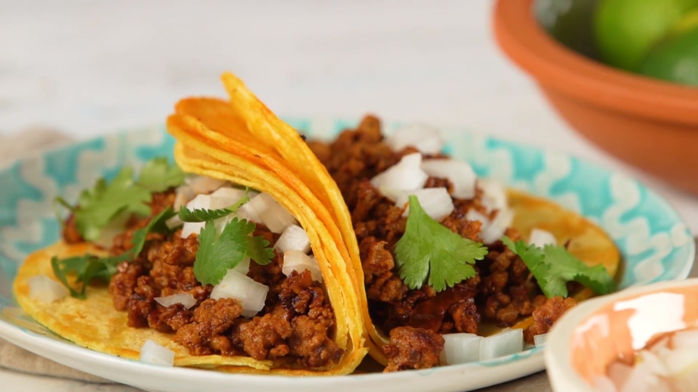

Street Tacos

Street Tacos
I have always loved genuine mexican tacos and I am always on the hunt
for the best tacos in town. However, somtimes I just need the tacos
ASAP so I make them at home.
The tacos won't be quite as succulent and juicy as grinding fresh,
but it's chorizo. Combine pork with garlic, cumin, some warm spices,
oregano, and vinegar, and how can it help but not be delicious?
Ingredients
- 1 chorizo sausage link, casing removed and meat crumbled
- 2 tablespoons chipotle peppers in adobo sauce
- 4 corn tortillas
- 2 tablespoons chopped onion, or to taste
- 2 tablespoons chopped fresh cilantro, or to taste (Optional)
Three Easy Steps
- Mix chorizo and chipotle peppers in adobo sauce together in a bowl.
- Heat a skillet over medium-high heat; add chorizo mixture and cook until crisp, 5 to 7 minutes.
Transfer chorizo to a plate, reserving grease in the skillet.
- Heat tortillas in the reserved grease in skillet over medium heat until warmed, 1 to 2 minutes per side.
Stack 2 tortillas on top of each other for each taco. Fill with chorizo, onion, and cilantro.